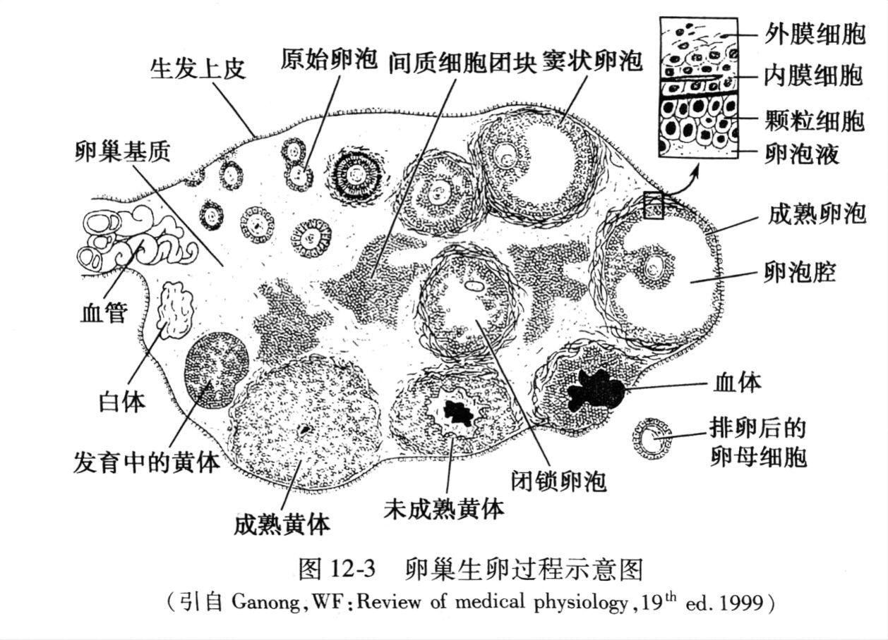
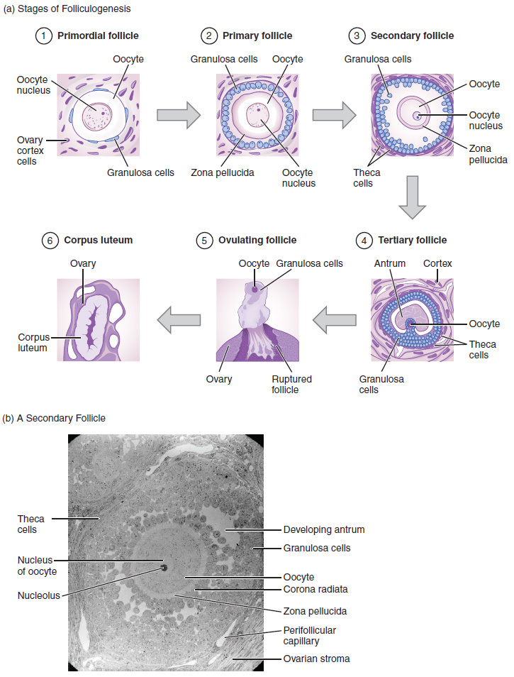
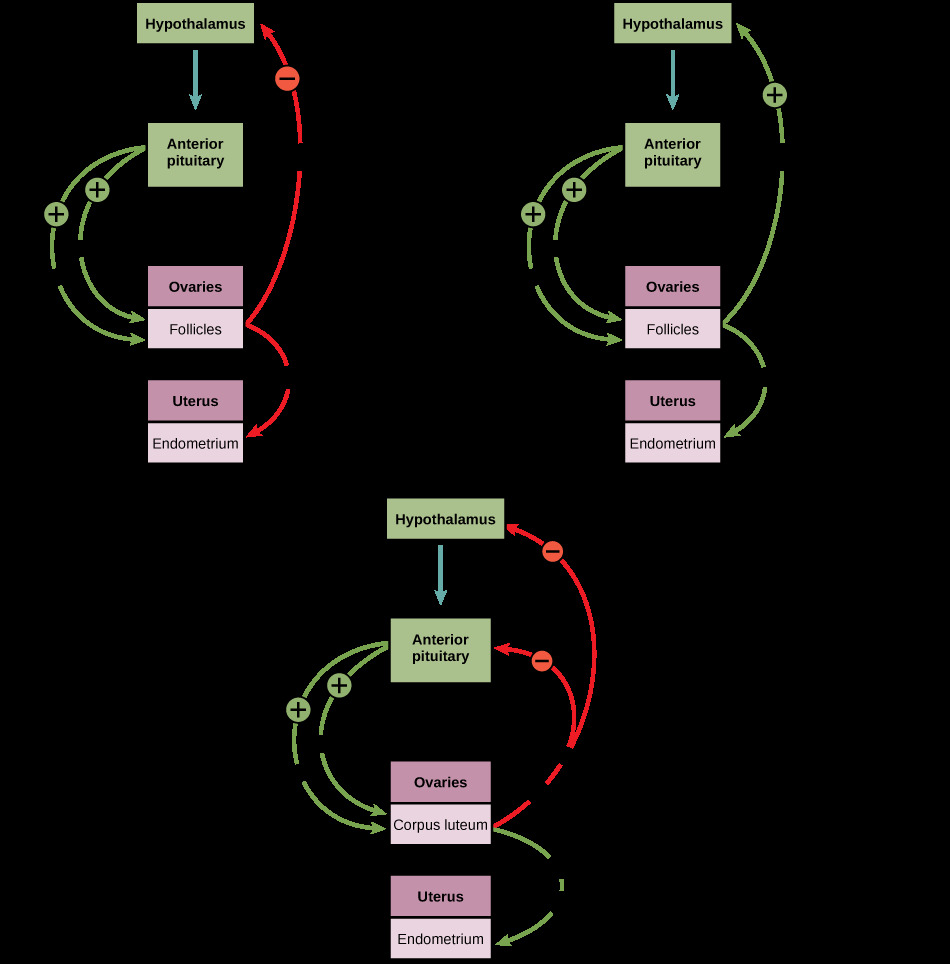

卵原细胞来源于妊娠5-6周时迁移到生殖嵴的原始生殖细胞。经历5-7周有丝分裂后总数达700万（最大值），之后持续凋亡。出生时减为200万个，青春期约30万个。育龄期仅400-500个卵泡完全发育排卵。
卵泡发育阶段：
从初级卵泡恢复发育到排卵需70-85天。排卵后，残存颗粒细胞和内膜细胞→黄体，分泌大量孕激素和雌激素。排卵后7-8天黄体达顶峰（直径1-3cm）。若未受精，排卵后第10天黄体退化→白体。若受精，黄体持续至妊娠5-6个月。
卵细胞富含母系mRNA、蛋白质和糖原等物质。减数分裂停滞两次：前期I（从胎儿期到青春期，可达10-15年），中期II（排卵时，至受精）。


雌激素在女性不同发育阶段有不同作用：胚胎期和儿童期水平较低，青春期明显提高，育龄期周期性波动，老年期几乎丧失。
雌激素的生理作用：
此外：降低血浆胆固醇和β-脂蛋白，促进肝合成纤维蛋白原等。
孕激素主要作用于子宫内膜和子宫平滑肌，以适应受精卵着床和维持妊娠。孕酮受体的含量受雌激素的调节。
月经周期是下丘脑—腺垂体—卵巢轴各激素周期性变化的结果。周期平均28天（24-35天正常）。
卵巢周期（三个阶段）：
子宫内膜周期（三个阶段）：
